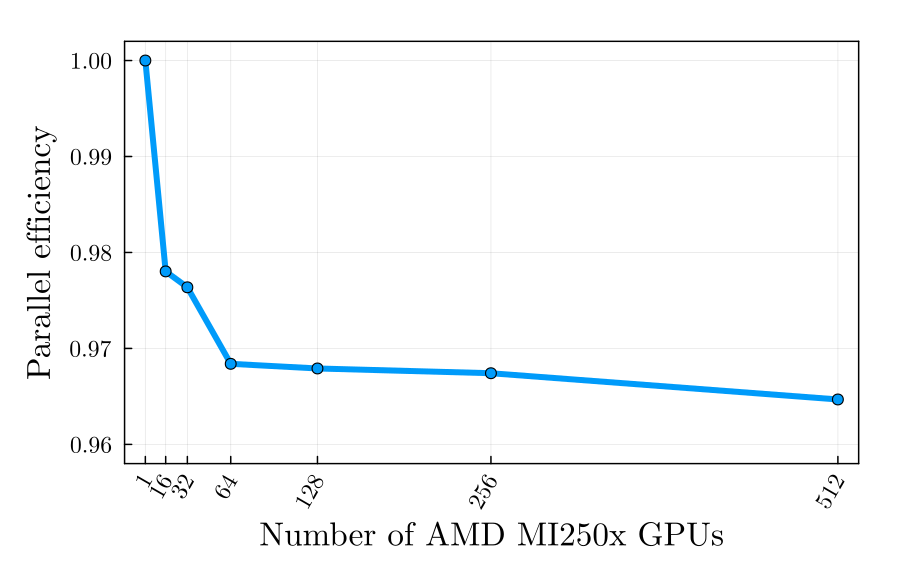
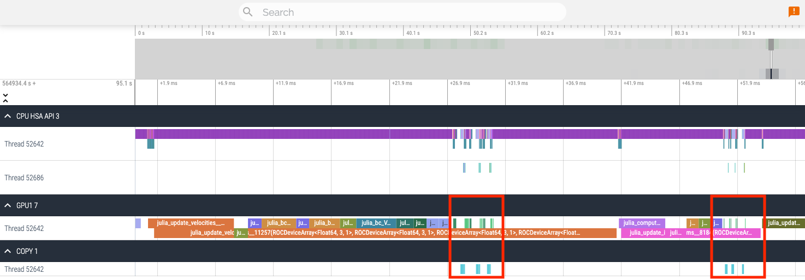

The AMDGPU.jl implementation of the thermomechanical ice flow solvers FastIce.jl achieves ideal weak scalability on 512 AMD MI250x GPUs on 64 LUMI-G nodes. The scaling tests were realised in the scope of a EuroHPC Extreme Scale Access submission - the STREAM project.
FastIce.jl on AMD GPUs on LUMI-G
Ludovic Räss
The European High Performance Computing Joint Undertaking (EuroHPC JU) launched a call to access its pre-exascale supercomputers. A GPU4GEO team composed of Ludovic Räss (ETHZ), Ivan Utkin (ETHZ) and Julian Samaroo (MIT JuliaLab) submitted the STREAM project within this EuroHPC call, to investigate SponTaneous REArrangment of ice Motion (STREAM).
The main scientific advances of this EuroHPC allocation will be to understand whether an internal shear band can spontaneously form in ice flowing over rough topography resulting in englacial sliding with the aim of providing a more accurate prediction of surface flow velocities over Greenland.
Regarding the technical aspects, preparing the data for the call application permitted to tune AMDGPU.jl for running on LUMI-G's MI250x GPUs "at scale".
The main technical advances of this EuroHPC allocation aim to set a milestone running our Julia HPC application on the latest AMD GPUs at pre-exascale on Europe’s fastest supercomputer, LUMI-G.
We achieve a parallel efficiency of 97% during weak scaling tests on up to 512 MI250x AMD GPUs on the LUMI-G EAP partition (64 nodes):
The key ingredient to achieve this ideal weak scalability relies in successfully overlapping ROCm-aware MPI communication with stencil computations. We use HSA custom kernel signal management and define priority on execution queues to schedule asynchronous kernel launch. The result is that MPI communication and send / receive buffer copies overlap with kernel execution as depicted in the figure below (highlighted by the red box):
The kernel execution timeline is produced using rocprof tool and visualised using the chrome tracing utility.